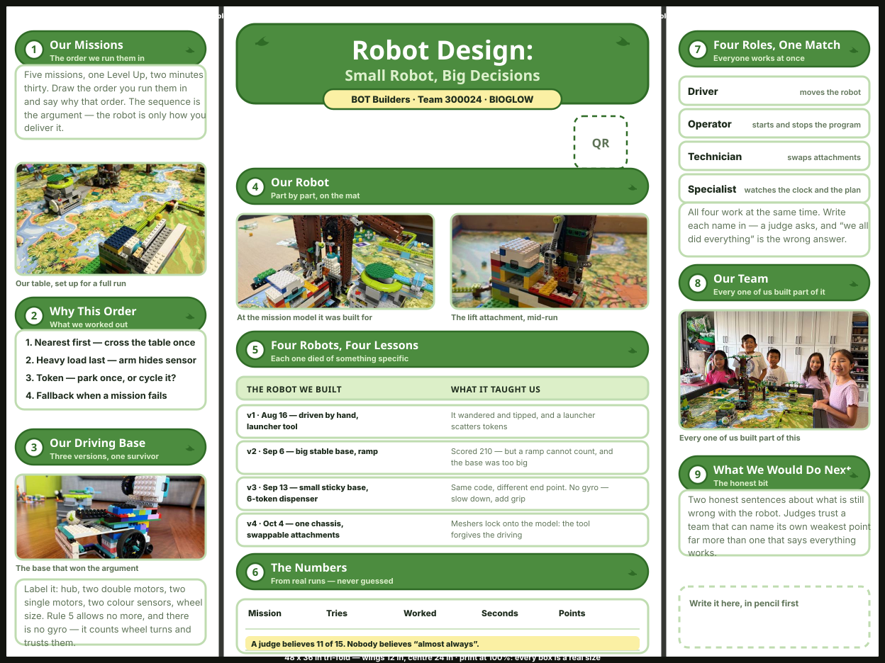
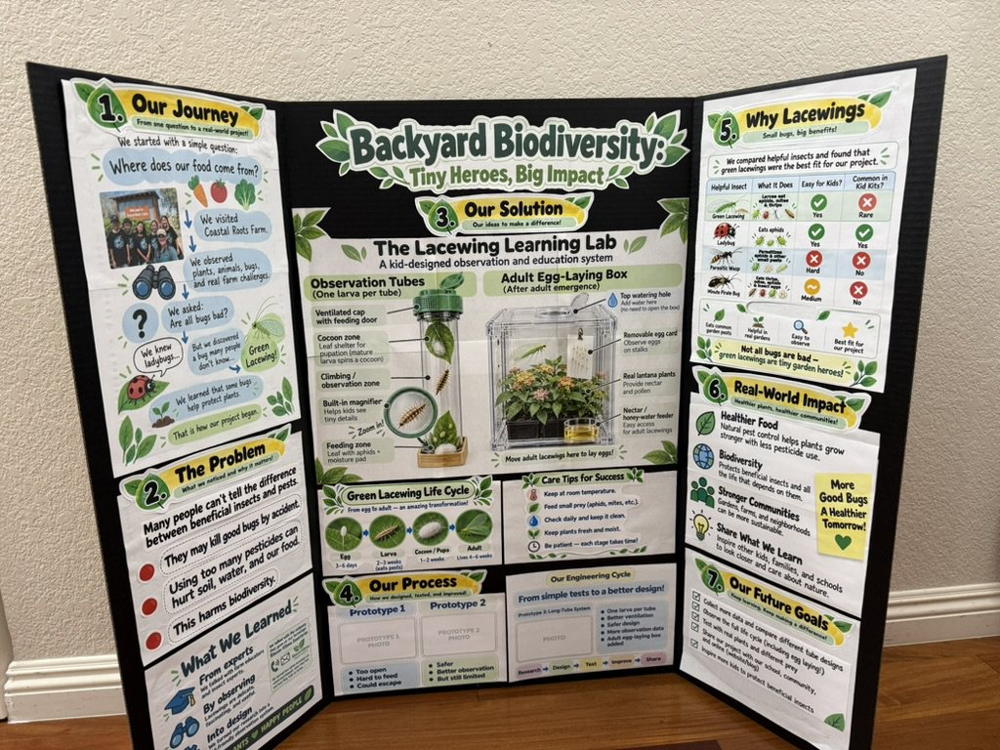
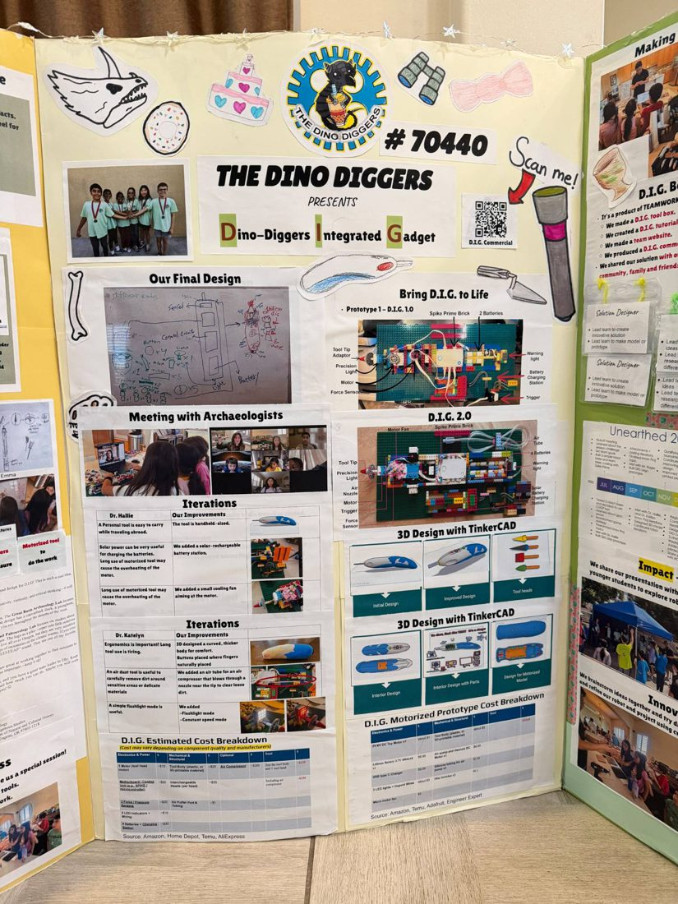
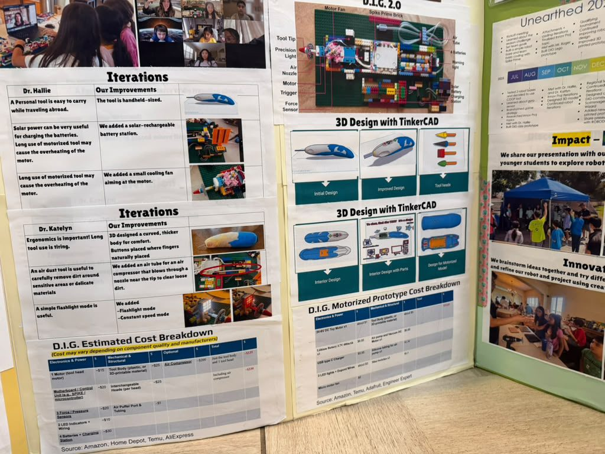

Summary: The plan for the Robot Design tri-fold — what goes in each panel, which of our photographs fills each slot, and what still has to be measured before it can be printed. It is dressed to match our own Innovation Project board, and borrows its structure from the Dino Diggers board (team 70440).
Sources: raw/source-docs/robot-design-2026-10/ (nine photographs, October 2026 — our robot, our own Innovation Project board, and two of the Dino Diggers board); wiki/match-strategy.md; wiki/driving-base.md; raw/bioglow/fll-future-3-8-judging-rubric.pdf
Last updated: 2026-10-16

Open the layout full size · regenerate with python3 scripts/make_board.py
It is drawn at true print proportions — 48 × 36 inches, wings 12 in, centre 24 in — so every box on it is a real size. Print at 100% and the boxes are the boxes.
The Innovation Project board already exists and already works — Backyard Biodiversity: Tiny Heroes, Big Impact. Two boards standing next to each other at a tournament should look like they came from the same team, so the Robot Design board borrows its whole visual language:

| From our board | On the robot board |
|---|---|
| Numbered green ribbons with a white badge | Nine sections, numbered 1–9 in the reading order |
| A one-line kicker under each heading | Every ribbon says what its section is for |
| White cards with pale green outlines | Every block of text and every photo |
| A yellow pill under the title | Team, number, season |
| Leaf sprigs either side of a heading | Same sprig, drawn in code |
| Black tri-fold edge | Same board, same edge |
Their board is an Innovation Project board, not a robot one, but the shape of it is what makes it work, and that transfers:
| What they do | Why it works |
|---|---|
| A title block you can read across a room | A judge decides whether to walk over from ten feet away |
| Two-column iteration tables — what we learned beside what we changed | It proves a loop happened. A list of features does not |
| Every expert conversation shown with a photo | "We met an archaeologist" is a claim; the screenshot is evidence |
| A costed parts table | Nobody expects it, so it reads as serious |
| A QR code to a video | The board cannot move; the video can |
| Hand-drawn doodles around the edges | It still looks like children made it, which it should |


The one thing not to copy: the density. Theirs is packed to the edges because they had a full season of evidence. Ours has five weeks. A half-full board of real numbers beats a full one of filler.
The sequence is the argument; the robot is only how it gets delivered. Pull the five sequences straight from match strategy and show the one chosen, with the reason beside each step.
Then the driving base, with the photograph labelled: hub, two double motors, two single motors, two colour sensors, wheel size. driving base already has the physics; the board needs one sentence of it.
Say the hard part out loud: there is no gyro in the kit. The robot counts wheel rotations and trusts them, which is exactly why squaring up against a wall matters more than driving accurately.
A clean photograph of the robot, and one of each attachment doing its job on the mat, not sitting on a table.
Then the iteration table, their two-column form:
Every row carries its own photograph on the board — v3 and v4 each get two, because each ran two tools on one base:
| The robot we built | What it taught us |
|---|---|
| v1 · 16 Aug — hand-driven, launcher on a tower | It wandered and tipped, and a launcher scatters tokens |
| v2 · 6 Sep — big stable base, ramp | Scored 210 — but a ramp cannot count, and the base was too big |
| v3 · 13 Sep — small sticky base, two tools | Same code, different end point. No gyro — slow down, add grip |
| v4 · 4 Oct — one chassis, attachments on gears | Meshers lock onto the model: the tool forgives the driving |
These are real, with dates, from the journal — the full version of each is in robot evolution.
Future Edition runs four jobs at once — Driver, Operator, Technician, Specialist — so name who does which. "We all did everything" is the wrong answer to a question a judge will definitely ask.
Then the team photograph, and a box that says what is still wrong with the robot. A team that can name its own weakest point is believed about everything else.
| Still needed | |
|---|---|
| ⬜ | Timed runs. Three columns of the numbers table are empty: tries, worked, seconds |
| ⬜ | Names against the four roles — unassigned since Week 6 |
| ✅ | Four real iterations with dates — done, from robot evolution |
| ✅ | Robot photos — v1 to v4 are on the board, with the current chassis bare and loaded |
| ⬜ | The route attachment photographed on the v4 base — the only version shot still missing |
| ⬜ | The QR code — python3 scripts/make_qr.py "<run video URL>" "Watch a run" --out run |
The numbers are the whole board. "Eleven of fifteen tries" is worth more than any sentence on it. "It almost always works" is worth nothing, and a judge has heard it from every team before you.